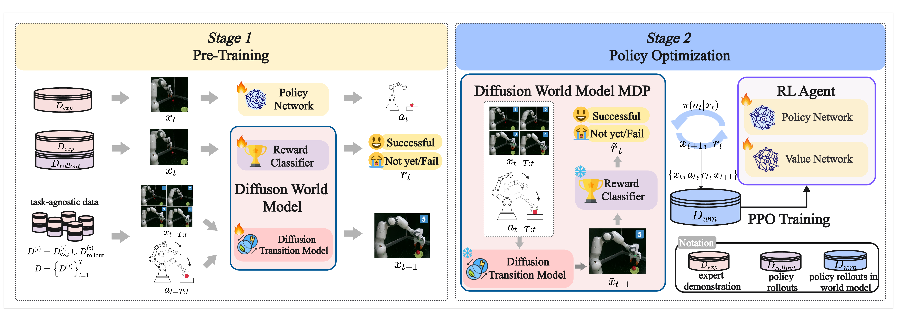
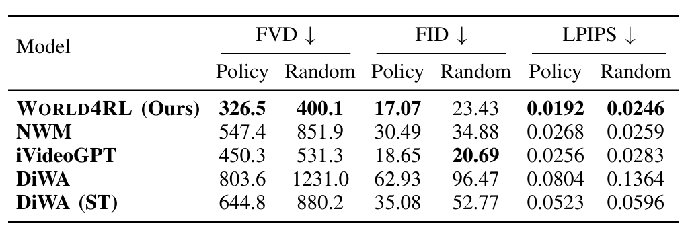
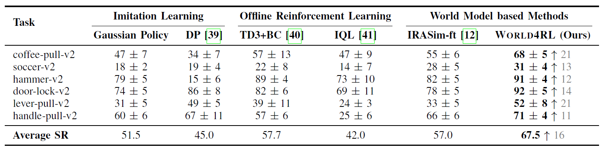
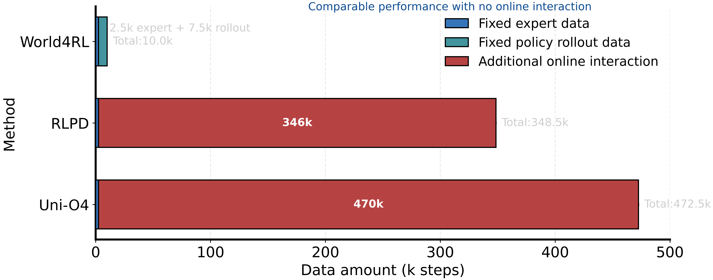
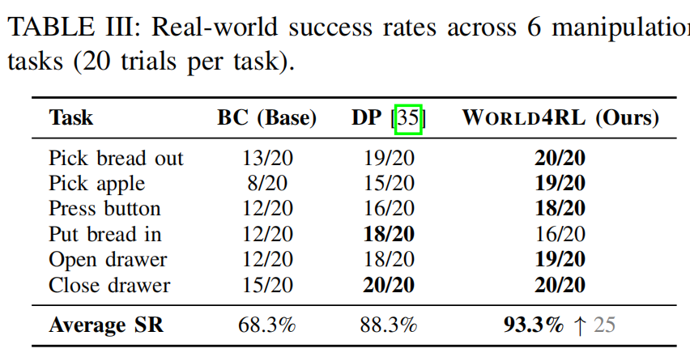

World4RL: Diffusion World Models for Policy Refinement with Reinforcement Learning for Robotic Manipulation
Abstract
Robotic manipulation policies are commonly initialized through imitation learning, but their performance is limited by the scarcity and narrow coverage of expert data. Reinforcement learning can refine policies to alleviate this limitation, yet real-robot training is costly and unsafe, while training in simulators suffers from the sim-to-real gap. Recent advances in generative models have demonstrated remarkable capabilities in real-world simulation, with diffusion models in particular excelling at generation. This raises the question of how diffusion model-based world models can be combined to enhance pre-trained policies in robotic manipulation. In this work, we propose World4RL, a two-stage system-level framework for robotic manipulation that uses a frozen diffusion visual world model as an imagined environment for reinforcement-learning-based policy refinement. Unlike prior works that primarily employ world models for planning, our framework enables direct end-to-end policy optimization. World4RL is designed around two principles: pre-training a diffusion world model that captures diverse dynamics on multi-task datasets and refining policies entirely within a frozen world model to avoid online real-world interactions. World4RL further integrates action encoding design, high-fidelity diffusion backbones, data-coverage recipes, and conservative exploration principles into a system-level pipeline for stable policy refinement. Extensive simulation and real-world experiments demonstrate that World4RL provides high-fidelity environment modeling and enables consistent policy refinement, yielding significantly higher success rates compared to imitation learning and other baselines.
Method
World4RL Framework Overview
World4RL consists of two stages: pre-training and policy optimization. In the pre-training stage, the diffusion transition model is trained on task-label-agnostic multi-task transition data, the reward classifier is trained on task-specific data annotated with binary success labels, and the policy is trained via imitation learning to provide a stable initialization. The reward classifier is trained not only on expert demonstrations, but also on policy-rollout observations, exposing it to intermediate, near-success, and failure states that the optimized policy is likely to visit. In the policy optimization stage, the pre-trained world model is frozen and used as an imagined environment, while the policy is refined with PPO under sparse rewards through imagined rollouts. This design improves both sample efficiency and safety, while enabling consistent gains over the initial Gaussian policy.

Figure 1: World4RL Framework Overview.
Design of Diffusion Transition Model
For each action dimension , given bin values , we map to its two nearest bins: with and , where denotes the two-hot weight vector for the i-th action dimension.
For example, suppose the action is \(a_i=0.14\), the action range is \([0,1]\), and we use \(K=10\) uniform bins \(B=\{0.0, 0.1, \ldots, 1.0\}\). The two nearest bin edges are \(b_k=0.1\) and \(b_{k+1}=0.2\).
A one-hot encoding chooses the closer bin (0.1), producing:
[0, 1, 0, 0, 0, 0, 0, 0, 0, 0].
In contrast, the two-hot encoding linearly interpolates between the two neighbors:
\[
t_i[k] = \frac{b_{k+1}-a_i}{b_{k+1}-b_k} = \frac{0.2-0.14}{0.1} = 0.6,\qquad
t_i[k+1] = \frac{a_i-b_k}{b_{k+1}-b_k} = \frac{0.14-0.1}{0.1} = 0.4.
\]
This yields:
[0, 0.6, 0.4, 0, 0, 0, 0, 0, 0, 0].
Thereby, two-hot encoding provides a lossless and differentiable representation that better handles continuous action inputs in robotic manipulation tasks.
Based on this, the diffusion transition model \(D_{\theta}\) is designed to predict the next observation through a denoising process conditioned on historical observations \(x^{0}_{t-T:t}\) and encoded actions \(z_{t-T:t}\).
Video: Diffusion Transition Model Architecture
Experiments Results
In experiment, We evaluated World4RL on video generation and policy execution in simulation and on a real Franka robot.
Simulated Robotic Manipulation Environments
The following quantitative evaluation and video rollout results consistently demonstrate the superiority of diffusion-based architectures in preserving temporal consistency and visual fidelity.

Quantitative results on video prediction. “ST” denotes single-task training.
Visualization of predicted rollouts on the coffee-pull task. The ground-truth (GT) trajectory reflects a failed execution. World4RL successfully captures this failure trajectory, whereas all baseline models fail to do so.
Simulation Performance
In simulation experiments, with policy refinement, we see a significant improvement over the pre-trained policy, achieving a 67.5% success rate across six Meta-World tasks, and further surpassing imitation learning, offline RL, and planning methods.

Success rate of different methods on Meta-World benchmark. The notation ↑n indicates the absolute improvement over pre-trained gaussian policy.
World4RL also achieves comparable performance with only expert and policy rollout data, while RLPD and Uni-O4 require 346k and 470k online steps, respectively, to reach the same level. This demonstrates the strong sample efficiency of World4RL, making it particularly suitable for real-robot deployment where online interaction is expensive and limited.

Comparison of online sample efficiency.
Real-World Performance
On real-world tasks, World4RL reachs 93.3% success, significantly outperforming diffusion policies and the pre-trained gaussian policy.

Success rate of different methods on real-world tasks.
Beyond achieving higher success rates, we also observe that policies fine-tuned with World4RL tend to execute tasks more decisively, quickly and accurately. For example, in the put bread in task, the fine-tuned policy promptly performs the grasping and placing actions, whereas gaussian policy and diffusion policy often show hesitation or linger in intermediate states without committing to task completion.
| TASK Name | Pre-trained Policy (Gaussian Policy) |
DP | World4RL |
|---|---|---|---|
| pick apple | |||
| push button | |||
| put bread in | |||
| put bread out | |||
| pull coffee | |||
| close drawer |
Visualization of real-world performance.
More Analyse
Reward Classifier Reliability
The reward classifier provides sparse success signals for PPO inside the frozen world model. To reduce reward hacking, it is trained with policy-rollout observations in addition to expert demonstrations, so it sees many states that the policy actually visits during refinement, including intermediate, near-success, and failure cases.
Many classifier errors near task completion are benign for policy optimization. For example, in drawer-opening tasks, a nearly opened drawer can be visually close to a successful state; this boundary effect is even more visible in simulation when the reward signal uses a strict success criterion. Such near-success boundary errors typically preserve the correct optimization direction because the policy continues to execute actions that move the system further into the success region. The more harmful failure mode is assigning success to observations that are far from any valid completion state.
| Evaluation setting | Accuracy | F1 | Observation |
|---|---|---|---|
| Held-out simulation test set (hammer-v2) | 94.4% | 84.6% | Held-out simulation observations with strict success labels. |
| Held-out real-world test set (open-drawer) | 98.7% | 92.6% | Real task observations not used for training. |
| 500 OOD real-world failure frames | 100% | N/A | All 500 all-negative frames are predicted as failure, showing that obvious failure states are not assigned spurious rewards. |
Control-Oriented World-Model Consistency
FVD, FID, and LPIPS measure visual prediction quality, but they do not fully capture whether the generated dynamics remain useful for control. Since the current world model predicts RGB observations rather than simulator states or object poses, we evaluate a task-level proxy: whether the learned world model preserves the success-rate trend of policy checkpoints observed in the real simulator.
On coffee-pull-v2, we saved 15 policy checkpoints from different training stages. Each checkpoint was evaluated from the same 100 initial states in both the simulator and the learned world model. Simulator success is measured by the environment, while world-model success is measured by the reward classifier used during policy refinement.
| Model | Pearson correlation | Interpretation |
|---|---|---|
| World4RL | 0.8848 | Success-rate estimates closely track simulator success across policy checkpoints. |
| NWM | 0.7225 | Success-rate estimates are less aligned with simulator success across checkpoints. |
| Evaluation source | 1 | 2 | 3 | 4 | 5 | 6 | 7 | 8 | 9 | 10 | 11 | 12 | 13 | 14 | 15 |
|---|---|---|---|---|---|---|---|---|---|---|---|---|---|---|---|
| Simulator success rate (%) | 41 | 44 | 53 | 42 | 47 | 50 | 51 | 54 | 52 | 46 | 58 | 49 | 67 | 62 | 57 |
| World4RL world-model success rate (%) | 38 | 39 | 58 | 37 | 48 | 53 | 47 | 48 | 58 | 39 | 50 | 46 | 65 | 64 | 60 |
| NWM world-model success rate (%) | 46 | 45 | 63 | 65 | 61 | 56 | 62 | 61 | 53 | 65 | 70 | 66 | 75 | 79 | 64 |
More Details
Behavior-Cloning Policy Implementation
The initial policy used by World4RL is trained with behavior cloning and then used as the initialization for PPO refinement inside the frozen learned world model.
| Item | Configuration |
|---|---|
| Policy type | Stochastic Gaussian policy |
| Visual input | 64 x 64 x 3 RGB image, single corner camera, frame stack = 1 |
| Visual encoder | 4-layer CNN with 32 channels, 3 x 3 kernels, strides (2, 1, 1, 1), and ReLU activations |
| Policy head | MLP mean head with a learned diagonal log-standard-deviation parameter |
| BC objective | Negative log-likelihood of expert actions |
| Optimizer | Adam, with separate optimizers for the visual encoder and actor |
| Learning rate | 3e-4 for both encoder and actor during BC warmup |
| Batch size | 256 transitions |
| Training budget | 30,000 actor BC update steps; losses typically converge in the early stage |
| Action normalization | Continuous actions normalized and clipped to [-1, 1] per dimension |
Computational Cost and World-Model Interaction Budget
The diffusion world model is trained once and then frozen. During policy refinement, each task uses 1M interactions with the frozen world model. Imagined rollouts are generated in batches on GPU, and the current implementation reaches an average throughput of 13.6 generated transitions per second.
| Item | Value |
|---|---|
| World-model pre-training hardware | 4 NVIDIA A800 GPUs, 40GB |
| World-model pre-training time | About 20 hours |
| Policy refinement hardware | 1 NVIDIA A800 GPU, 40GB |
| Policy refinement time per task | About 6 hours |
| Diffusion denoising steps per transition | 3 |
| Average generated transitions per second | 13.6 transitions/s |
| World-model interactions per task | 1M state-action-next-state interactions |
| PPO rollout batch | 64 initial states x 15 rollout steps |
| PPO mini-batch / epochs | Mini-batch size 64; 6 PPO epochs per rollout batch |
Baseline Implementation Details
All baselines are evaluated in the fixed-dataset setting. The table summarizes their training data, principal hyperparameters, and checkpoint-selection protocols.
| Method | Training data | Key settings | Tuning / selection protocol |
|---|---|---|---|
| Imitation Learning | |||
| BC | 50 expert demonstrations | Batch size 256; Adam with learning rate 3e-4; 30,000 training updates. | Fixed 30k updates; losses typically converge in the early stage. |
| Diffusion Policy | 50 expert demonstrations | Official image-policy setting: observation horizon 2, prediction horizon 16, action horizon 8, DDPM denoising steps 100, AdamW learning rate 1e-4, batch size 64; 30,000 training updates. | |
| Offline Reinforcement Learning | |||
| TD3+BC | 50 expert demonstrations + 150 BC-policy rollouts | Official TD3+BC defaults: actor/critic learning rate 3e-4, batch size 256, discount 0.99, target-update rate tau = 0.005, target policy noise 0.2, noise clip 0.5, delayed policy update frequency 2, BC weight alpha = 2.5, 1M gradient steps. | Train for 1M updates; evaluate the final checkpoint. |
| IQL | 50 expert demonstrations + 150 BC-policy rollouts | Official IQL defaults: actor/critic/value learning rates 3e-4, batch size 256, discount 0.99, target-update rate tau = 0.005, expectile 0.7, inverse temperature 3.0, 1M gradient steps. | |
| World-Model-Based Methods | |||
| IRASim | 230 trajectories per task: 50 expert + 150 BC-policy + 30 random | Uses the same BC checkpoint as World4RL; samples 50 candidate trajectories in the learned world model and scores them with the reward model. | Executes the trajectory with the highest predicted reward. |
| DiWA | 230 trajectories per task: 50 expert + 150 BC-policy + 30 random | Official DiWA defaults: DreamerV2 RSSM with deterministic dimension 1024, 32 x 32 categorical stochastic latent and hidden dimension 1000; world-model sequence length 50, batch size 50, AdamW learning rate 3e-4, weight decay 0.05; policy horizon 4, 20 denoising steps (10 fine-tuned); PPO with 50 parallel environments, 36 rollout steps, actor/critic learning rates 1e-5/1e-3, batch size 7,500, and 10 update epochs. | Stop when world-model SR converges or declines; test the top-5 checkpoints in the actual environment and retain the best per seed. |
| TD-MPC2 | 230 trajectories per task: 50 expert + 150 BC-policy + 30 random | Official TD-MPC2 defaults: latent dimension 512, model rollout horizon 3, MPPI planning with 512 candidates, 64 elites, 6 iterations, 24 policy trajectories, Adam learning rate 3e-4, batch size 256, 10M training steps. | |
| World4RL | 230 trajectories per task: 50 expert + 150 BC-policy + 30 random | PPO actor/encoder learning rate 1e-6, rollout horizon 15, batch size 64 initial states, mini-batch size 64, 6 PPO epochs per rollout batch, 1M world-model environment interactions, and log-standard-deviation upper bound 0 (std ≤ exp(0) = 1). | Run for 1M world-model interactions; test the top-5 checkpoints ranked by world-model success rate in the actual environment and retain the best per seed. |